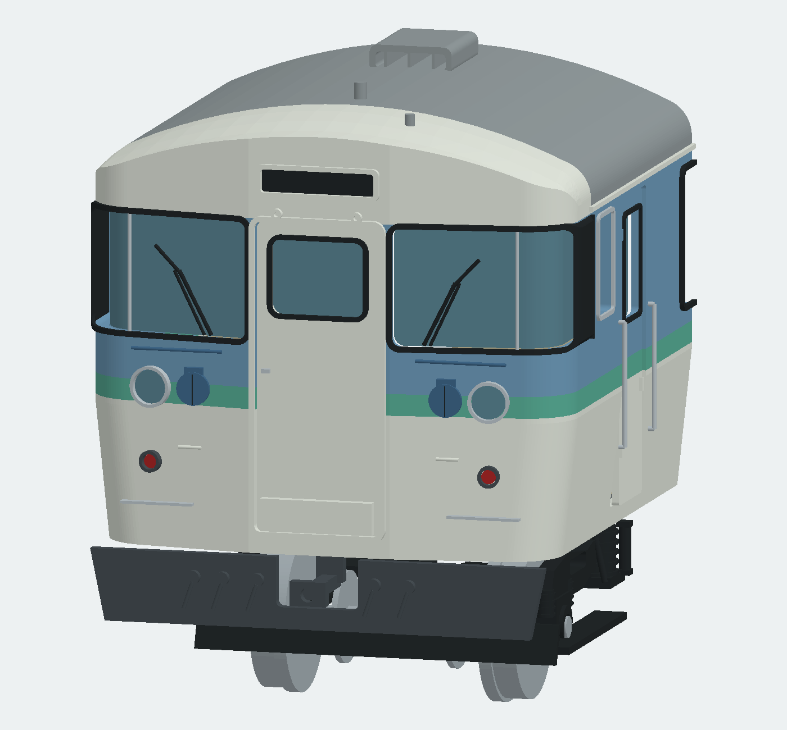
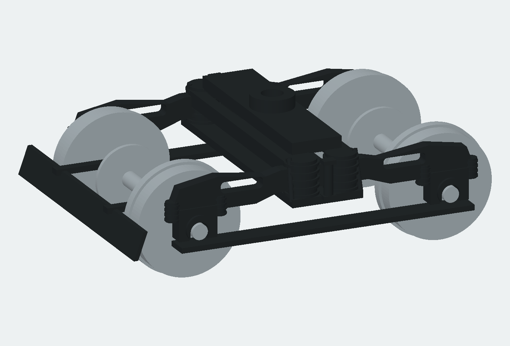

前回のCAD形状と今回の改訂


ガラスを前寄りへ、ライトを椀状の反射鏡と凸レンズへ、スカートを左右へ回り込む形へ改訂。前頭額・窓高さ・表示箱は途中の写真照合WIPから引き継いだ改善です。
クハ115-1222/N15 長野色営業時代（1994〜97年を外装候補）・1/80 HO16.5
同車の2013年訓練車写真は共通の車体形状確認に使い、その塗装・訓練標記・改造箇所は移植しない。局所寸法は写真推定。

ガラスを前寄りへ、ライトを椀状の反射鏡と凸レンズへ、スカートを左右へ回り込む形へ改訂。前頭額・窓高さ・表示箱は途中の写真照合WIPから引き継いだ改善です。



アンテナの角形架台、脚付き歩み板、ファン支持桟、前頭屋根のループ手掛けを追加。屋根との差分で台座が消える不具合も修正。
| 部位 | 前回・途中状態 | 実車で確認した特徴 | 今回の変更 | 残る推定・簡略化 |
|---|---|---|---|---|
| 前頭屋根・額 | 前回配布模型は大きな平面の額と段状の屋根。 | 中央の緩い横断曲率と、前から上へ丸く立ち上がる額、肩への連続。 | 前頭曲面を連続ロフトにした既存WIPを採用。今回、屋根のSTL弦誤差を0.025→0.006 mmにして表示用の粗い面の影響も減らす。 | 額R5.875、隅R3.8、折妻8度は模型設計値。写真から実寸確定はできない。 |
| パノラミック窓 | 開口が高く、ガラスが外板から1.08 mm後退して穴壁が深い。 | 前面から側面へ回るガラス、細い縦桟、ガラスは黒Hゴムの直後。 | 高さ7.6 mmのWIP開口を採用し、ガラス外観面を外板から0.22 mm後退へ前寄りにする。曲面の別透明部品を維持。 | ガラスの段差0.22 mmは模型の取付設計値で実測ではない。 |
| 貫通扉・窓 | 初期模型は縦長窓だった。前回改訂模型では横長に修正済み。 | 扉・Hゴム・幌受・横手掛け・斜め上隅の渡り板を分けて読む。 | オーナー指定の開口7.2×5.8 mm、Hゴム外周7.6×6.2 mmを維持。WIPの締結耳、足付き手掛け、渡り板・ヒンジを反映。 | 後妻窓は前面窓と別の設計値。車番固有の実寸未確定。 |
| 表示器・ワイパー | 前回模型は薄い表示穴、外向きワイパー。 | 前面表示器は額から突出した箱。1222写真ではワイパーは内側上方へ停止。 | WIPの箱形表示器、普通幕、内向き連動腕を採用。表示箱のSTL体積誤差0.2607%失敗に対し弦誤差0.006 mmで再出力。 | 1106の別の停止姿勢を1222へ無条件に移さない。 |
| 前照灯・尾灯 | 薄い輪と平らな円盤。WIPでも反射鏡が円柱だった。 | 前照灯内部は奥に落ち込む椀状反射面、電球、薄い縁とレンズ。 | 中心・外径は保ち、前照灯を椀状反射鏡と浅い凸レンズに変更。塗装胴・金属リング・電球・透明レンズを分離。 STL弦誤差は薄い反射鏡とレンズのみ0.001 mm。 | レンズの細かなプリズム筋は省略。光学特性の再現ではない。 |
| スカート・連結器 | スカートは全頂点X=-0.55の平板。連結器は単純な穴付き箱。 | スカートは中央板から左右へ回り込み、連結器切欠の下には連続した下縁。連結器頭部には段差。 | 中央と左右翼の折れ、上半幅17.1 mm／下半幅16.0 mmの下絞り、丸い外隅、連続した下縁を持つ一体部品へ。連結器頭部にかみ合い・案内部の段差を追加。 | スカート下端6.6 mmと翼の後退量は写真からの模型寸法。実測値ではない。 |
| アンテナ・炎管・屋根手掛け | アンテナ台座の上端45.25 mmが屋根45.675 mmの内部にあり、屋根差引で台座が全消去。 | 広い角形の支持台と脚、引込線、前頭屋根左右のループ手掛け。 | 台座を屋根の上へ置き、脚を実屋根曲面で切り合わせる。配線とループ手掛けを追加。 信号炎管の頭部を半径0.78 mmの傘形へ広げ、上段を追加。 | 配線経路と台座寸法は写真推定。炎管とアンテナを同じ形にはしない。 |
| AU75G・歩み板・通風器 | 前回模型は長手方向の台形キセ。WIPで幅方向アーチ、肩スリット、曲面通風器へ改善済み。ただし歩み板が浮き、ファンに支持がない。 | 幅方向に丸いキセ、二つのファン、保護格子、開口付き通風器、脚付き歩み板。 | 既存WIPを採用し、歩み板に四脚、ファンに十字支持桟を加えてキセと接する形へ整える。 | 通風器6個の配置は設計案。年代別機器を混同しない。 |
| 側面・サッシ・扉 | 前回模型より左右別の窓配列・客扉中心75 mm間隔へWIPで改善済み。 | 固定Hゴムと銀色二段サッシを区別。便所側と運転士側には配列差。 | 改善済みの左右別配列・Hゴム・中桟・扉・乗務員手掛けを反映し、部位グループを保持。 | 上下ガラスの可動構造とサッシの重なり段差は簡略。局所窓寸法は写真推定。 |
| 台車・床下・室内 | 前回模型の直線側枠と長い押え板。WIPでアーチ側枠、太いばね、軸箱、局所押えへ改善済み。 | 台車側枠の空間、ばね・ダンパー・リンク・内側ディスクが重なる。床下機器は車種・左右別。 | 既存WIPの曲線側枠・軸箱蓋・ボルト・局所輪軸押えを反映。床下はクハの外観案を維持し、モハ更新車のSIVを追加しない。 | 台車末尾形式、制動機構の細部、床下機器の同定・反対側配置、市販輪軸互換・走行・実印刷は未確認。 |

完成時の見え方を示すAI予想図。実車・寸法の正本ではない。
写真原本は作業中に実見。第三者写真はこの配布物へ転載せず、原ページを案内します。透視写真から局所寸法を測り切ったとは扱いません。